라즈베리파이에서 파이드OS(Fyde OS) 설치하기
라즈베리파이에서 파이드OS(Fyde OS) 설치하기
안녕하세요. AkibaTV입니다.
이번에 소개할 내용은 라즈베리파이에 파이드OS(Fyde OS) 설치하기 입니다.
파이드OS(Fyde OS)는 구글의 크롬OS를 기반으로 개발된 플린트 OS를 중국이 인수를 해서
개량을 많이 거친게 파이드OS 입니다.
그래서 어떻게 설치 하는것인지에 대해서만 설명을 드리며
중국에서 만들었기에 보안이나 여러가지 문제가 생길가능성이 있으며
이 설명은 어디까지나 어떻게 설치하는지에 대해서만 설명을 드리도록 하겠습니다.
사용에 대해서는 각자의 판단에 맡기도록 하겠습니다.
그럼 파이드 OS를 다운로드 하시기 위해 아래의 링크를 눌러주세요.
https://github.com/FydeOS/chromium_os-raspberry_pi/releases
라즈베리파이가 3인지 4인지에 따라서 맞는 파일을 다운로드를 해주시기 바랍니다.
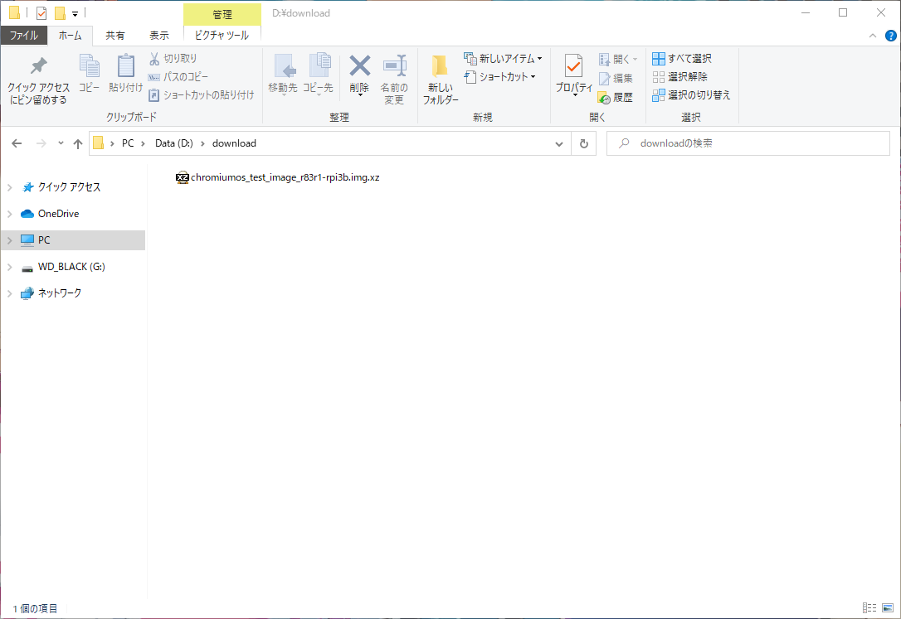
위와같이 다운로드가 되셨으면 설치를 하는방법은 라즈베리파이 OS설치와 동일 합니다.
SD카드를 삽입후 balenaEtcher를 실행을 하시기 바랍니다.
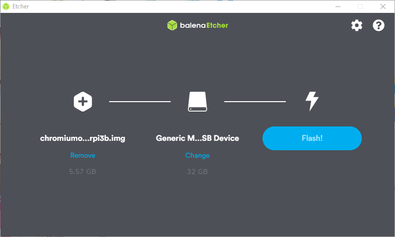
첫번째는 다운로드하신 파이드OS 이미지파일을 선택을 하신후
두번째는 사입하신 SD카드를 선택하시고 Flash!버튼을 눌러주시면 됩니다.
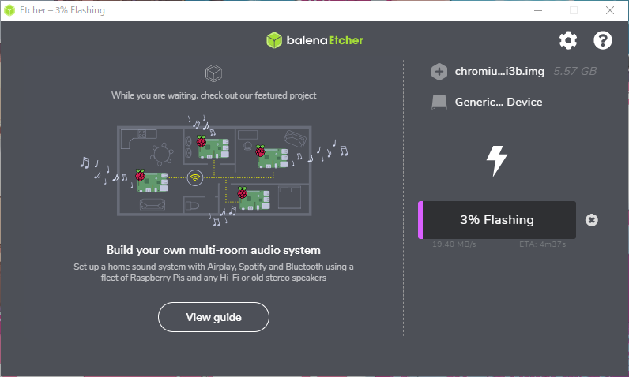
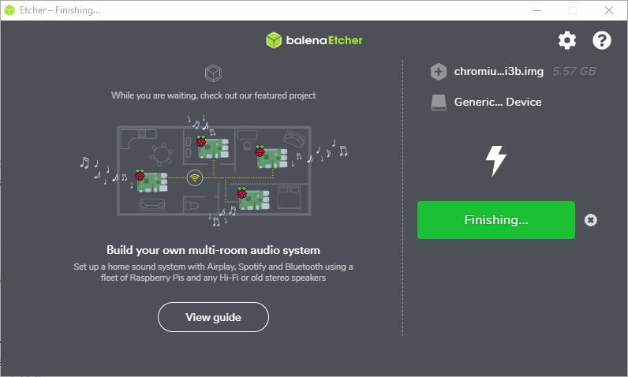
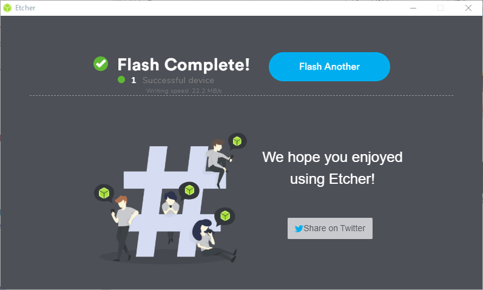
진행이 끝날때까지 기다리신후 위와같이 나오시면 SD카드를 추출하시고 라즈베리파이에 삽입을 하신후
라즈베리파이을 기동을 하시면 되겠습니다.
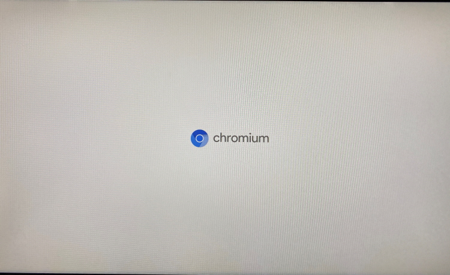
처음 기동을 하시면 위와같이 나오게 됩니다.
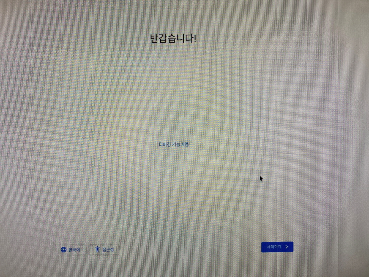
위와같이 나오시면 언어를 변경후 시작하기를 눌러주세요.
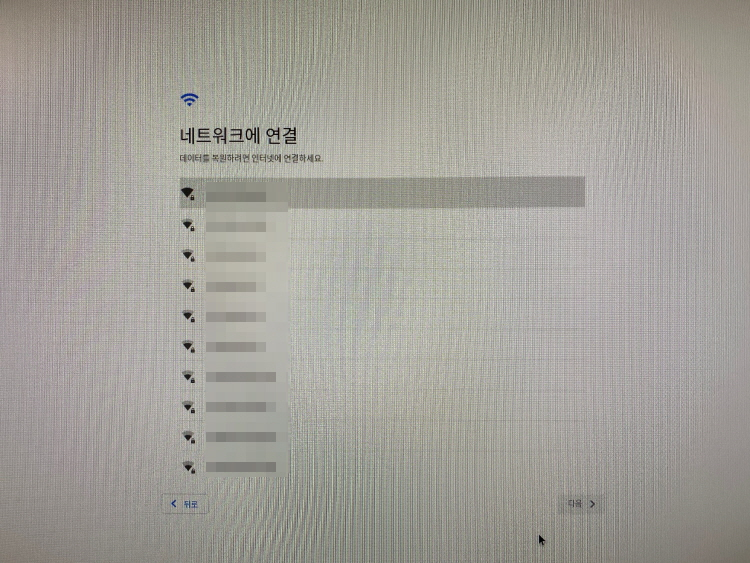
파이드OS를 사용하실려면 기본적으로 인터넷이 되야만 사용이 가능 합니다.
와이파이를 선택후 접속을 해주시기 바랍니다.
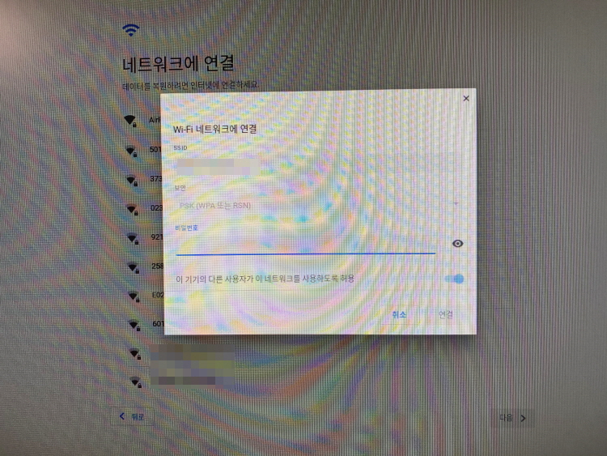
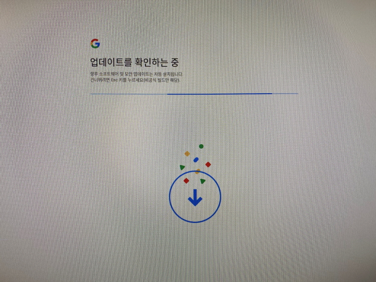
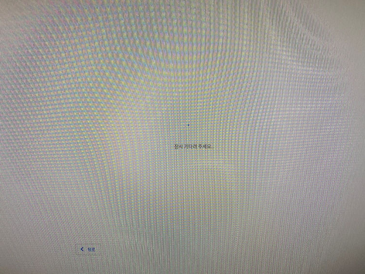
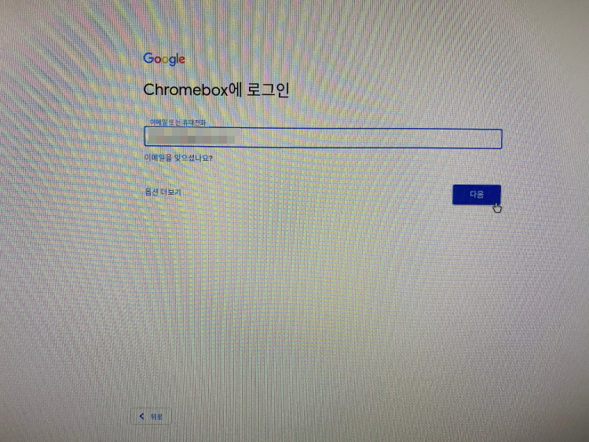
업데이트 확인이 되시고 위와같이 나오시면 구글의 아이디를 입력해 주시기 바랍니다.
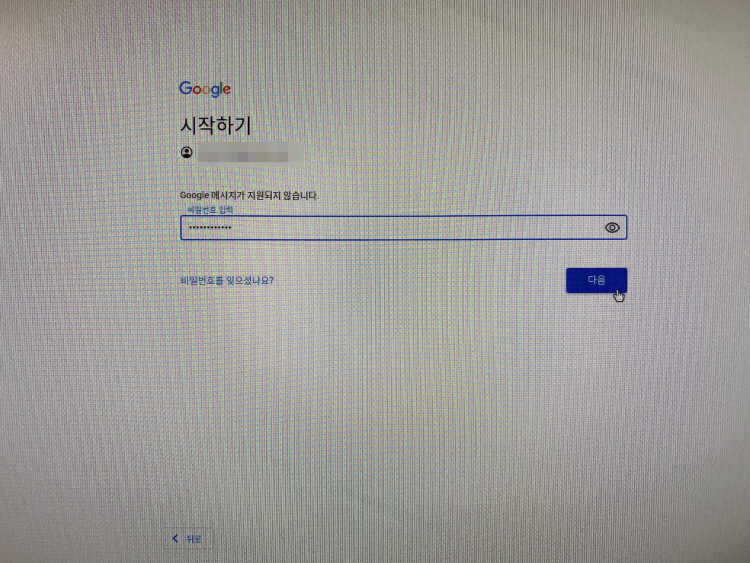
비밀번호를 입력하시고 다음을 눌러주시기 바랍니다.
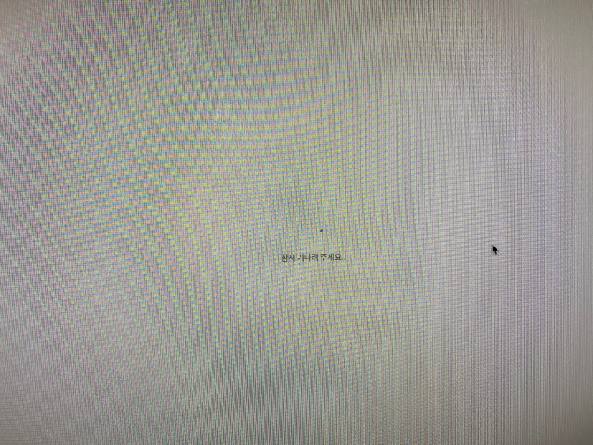
구글 계정이 인증이 되시면 위와같이 나오게 되며 잠시 기다리시면 됩니다.
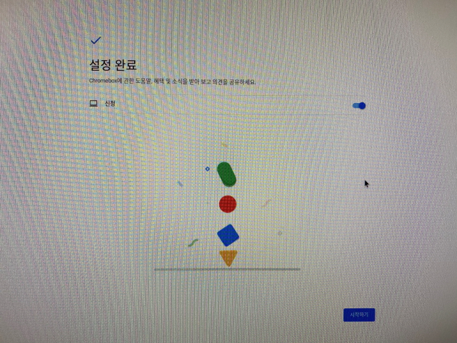
위와같이 설정 완료가 나오시면 시작하기를 눌러서 이제 본격적으로 사용하실수 있습니다.
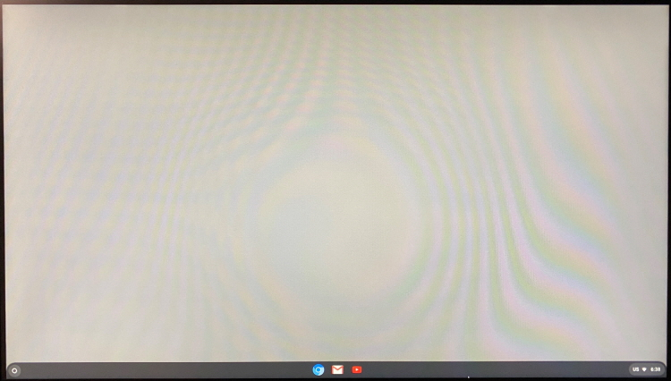
위와같이 나오면 파이드OS를 제대로 사용하실수 있게 되겠습니다.
라즈베리파이3B에서 동작 확인을 해본 결과 너무 반응이 느려서
사용하기에는 무리가 있을듯 싶습니다.
최소한 사용하시려면 라즈베리파이4에서 구동을 하시는것을 추천해 드립니다.